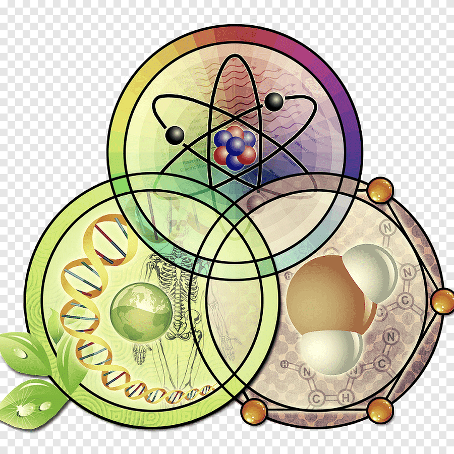

La Ciencia
Tipos de Ciencias
La Ciencia (en latín scientia, de scire, que significa “conocer”) es el conjunto de conocimientos sistemáticos sobre la naturaleza, los seres que la componen, los fenómenos que ocurren en ella y las leyes que rigen estos fenómenos. Es una facultad del hombre que le permite encontrar explicaciones a los fenómenos estudiados y respuestas a las interrogantes planteadas sobre acontecimientos determinados, mediante un conjunto de ideas que pueden ser provisionales, pues con la actividad de búsqueda continua y el esfuerzo de hombres y mujeres, estas explicaciones pueden variar y constituir un nuevo conocimiento.
- Ciencias Formales:
- Lógica
- Matemática
- Estadística
- Informática
- Ciencias de la computación
- Ciencia computacional teórica
- Ciencias Fácticas:
- Ciencias Naturales:
- Química
- Física
- Biología
- Atronomía
- Geología
- Ciencias Sociales:
- Sociología
- Economía
- Historia
- Geografía
- Lingüística
- Antropología
- Psicología
- Ciencias Naturales:
- Ciencias Formales:
- Ingeniería
- Arquitectura
- Medicina
- Farmacia
- Arqueología
Es una serie de conocimientos neutrales y comprobables acerca de un tema específico. El concepto de ciencia se extiende en todas las ramas de las diferentes áreas o campos del conocimiento, donde llevan a cabo los especialistas los distintos estudios y observaciones, implementando el método científico, para que de esta manera se pueda lograr alcanzar nuevos conocimientos certeros, irrefutables, válidos y objetivos.
Tiene como base fundamental las observaciones experimentales. Dichas observaciones se estructuran mediante modelos, métodos y teorías con el propósito de formar nuevos conocimientos. Para esto se establecen criterios reales y un método de investigación. La implementación de esos conocimientos y métodos encamina a la formación de nuevos conocimientos en un estilo de revelaciones concretas, de proporción y comprobables dirigidas a observaciones del pasado, presente y del futuro.
Las ciencias son muy diferentes en sus propósitos específicos. Sin embargo, todas comparten en común la búsqueda de leyes generales; principios metodológicos fundamentales; carácter sistemático y utilidad para la civilización. Veamos cada característica por separado.
Aplica el método científico. La ciencia aplica normas y criterios verificables para estudiar los fenómenos, los cuales se denominan método científico. El método científico se basa en:
- Observación
- Proposición
- Formulación de hipótesis
- Experimentación
- Demostración
- Conclusiones
Características de la Ciencia
Para más información sobre física, haga clic en la imagen:
Para más información sobre química, haga clic en la imagen:

Para más información sobre biología, haga clic aquí:

Tiende a buscar leyes generales. La ciencia pretende entender las leyes o principios generales que rigen a los fenómenos. Algunas ciencias, como las matemáticas, persiguen que estas leyes tengan grado de certeza. Otras ciencias, como las naturales o sociales, construyen leyes sujetas a revisión constante. Un ejemplo de ley general en la ciencia es la ley de la gravedad de Newton.
Es acumulativa y sistemática. La ciencia valora el conocimiento acumulado de las investigaciones previas, es decir, los antecedentes. Estos son siempre un punto de partida, bien como sustento o como cuestionamiento. A la vez, todo nuevo conocimiento pasa a ser parte del acervo científico. Por ejemplo, la teoría heliocéntrica de Copérnico sustituyó a la teoría geocéntrica de Ptolomeo, mientras que las leyes de Kepler sobre las órbitas elípticas perfeccionaron la teoría copernicana.
Es útil. Toda ciencia produce conocimiento provechoso, necesario e imprescindible para interpretar la realidad y para estimular el desarrollo humano y social en cualquiera de sus aspectos: cultural, intelectual, tecnológico, industrial, etc. Por ejemplo, la ciencia permitió el descubrimiento de la penicilina y de la electricidad.
Contáctanos